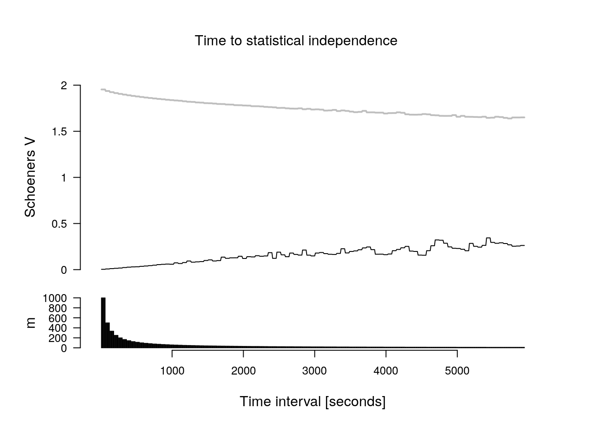
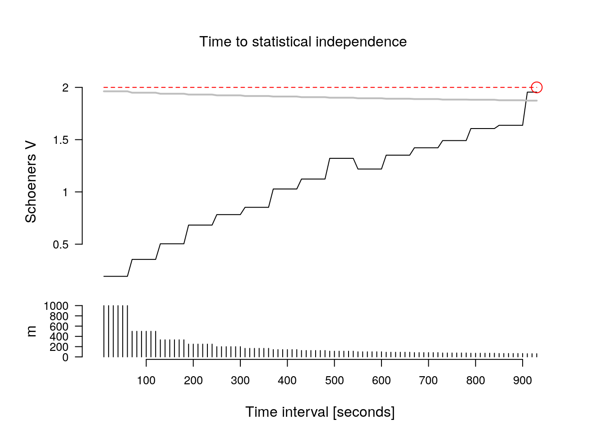

Swithart and Slade 1985 introduced a method to test for the temporal independence of animal relocations. Whether or not independence is prerequisite for home-range estimation has received much attention (e.g., Fieberg 2007, deSolla et al). Newer home-range estimation methods also have the ability to explicitly model temporal auto correlation (e.g., Fleming et al 2015). We provide the method proposed by Swithart and Slade (1985) here. However, we do not give any recommodation to use it, or to subsample data to reach independepence.
Swithart and Slade 1985 provided a way to determine a critical value for the Schoener statistic. The methods is implemented here, is to test for different time intervals, whether or not the critical value is reached.
TTSI requires a time stamp for each relocation. In order to use TTSI make sure time stamps are mapped correctly in the mapping data part. Next click on configure > exploratory analysis > Time to statistical independence. Three options can be set here:
From the command line TTSI can be calculated with the function rhrTTSI()
The main results from the TTSI analysis is one plot with two panels. In the upper panel the value of the test statistic is shown and in the lower panel the number of relocation pairs being used. The solid black line shows the value of the test statistic, the grey line is the value of the critical that need to be reached in order to obtain have temporal independence according to this method. If TTSI is reached (second example below) a red line dot and dashed line are shown.
In the first example the TTSI is not reached.

Next an example of trajectory that reaches TTSI.

Note that two simulated trajectory where used. In the first example we used a random walk (i.e., non stationary distribution) and in the second case an Ornstein-Uhlenbeck process (a stationary distribution). This highlights a further point of caution.